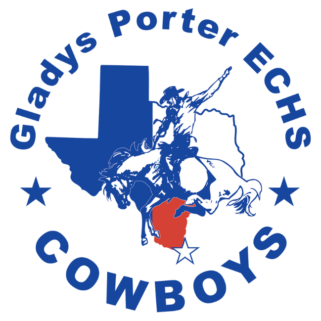

VITALIS
Lunar Sleep-Shift Scheduling Tool
School ID TX126
Our student-developed prototype for helping astronauts manage sleep, fatigue, naps, caffeine, and changing work shifts during space missions.

Project Overview
VITALIS is our student-developed prototype for the NASA HUNCH SFT 2026–27 Lunar Sleep-Shift Scheduling Tool. NASA HUNCH challenged us to develop an onboard, offline system that can help astronauts manage sleep and work-shift changes while reducing fatigue during missions. The concept is designed to provide personalized sleep and wake recommendations, naps, caffeine and sleep-aid timing, fatigue monitoring, and feedback while still allowing mission operations to override recommendations when necessary.
Our team turned that challenge into VITALIS, a software-based prototype focused on making the system practical and accessible on mission computers or tablets. We researched astronaut sleep, circadian rhythms, fatigue, nutrition, caffeine, and wearable technology, then moved from our early hardware/wearable concept toward a software system. We built the prototype with Flutter and Dart and developed features including crew profiles, authentication, sleep planning, fatigue scoring, shift scheduling, mission events, food and caffeine tracking, check-ins, saved recommendations, feedback, and history. We continue to test the system with different inputs and refine the scheduling logic so that recommendations can better respond to each crew member and the demands of mission operations.